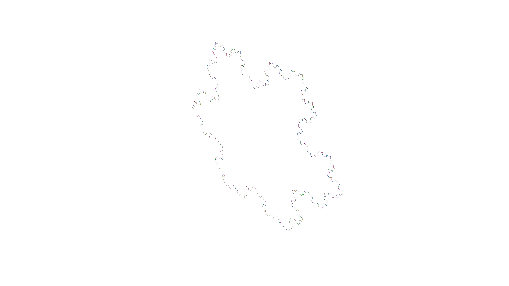

In this example, we create a Koch snowflake, which is one of the earliest fractals to be described. The Koch snowflake is a closed curve composed on multiple of segments of different lengths. Starting with an equilateral triangle, each segment in the snowflake is replaced by four segments of smaller length arrange in a specific manner. Graphically, the first four iterations of the Koch snowflake construction process result in the following figures (the green segments are shown as guides but they are not part of the snowflake):
First four iterations fo Koch snowflake fractal
In order to implement the construction process of a Koch snowflake in VPL we need to understand how a 3D structure can be generated from a graph of nodes. VPL uses a procedural approach to generate of structure based on the concept of turtle graphics.
The idea behind this approach is to imagine a turtle located in space with a particular position and orientation. The turtle then starts consuming the different nodes in the graph (following its topological structure) and generates 3D structures as defined by the user for each type of node. The consumption of a node may also include instructions to move and/or rotate the turtle, which allows to alter the relative position of the different 3D structures described by a graph.
The construction process of the Koch snowflake in VPL could then be represented by the following axiom and rewriting rule:
Where E represent and edge of a given length (given in parenthesis) and RU represents a rotation of the turtle around the upward axis, with angle of rotation given in parenthesis in hexadecimal degrees. The rule can be visualized as follows:
Koch construction rule
Note that VPL already provides several classes for common turtle movements and rotations, so our implementation of the Koch snowflake only needs to define a class to implement the edges of the snowflake. This can be achieved as follows:
usingVPLmodule snimportVPLstruct E <: VPL.Node length::Float64endendimport.sn
Note that nodes of type E need to keep track of the length as illustrated in the above. The axiom is straightforward:
The rule is also straightforward to implement as all the nodes of type E will be replaced in each iteration. However, we need to ensure that the length of the new edges is a calculated from the length of the edge being replaced. In order to extract the data stored in the node being replaced we can simply use the function data. In this case, the replacement function is defined and then added to the rule. This can make the code more readable but helps debugging and testing the replacement function.
Rule replacing nodes of type Main.sn.E without context capturing.
The model is then created by constructing the graph
Koch =Graph(axiom, rules =Tuple(rule))
Dynamic graph with 5 nodes of types Main.sn.E,VPL.Geom.RU{Float64} and 1 rewriting rules.
In order to be able to generate a 3D structure we need to define a method for the function VPL.feedgeom! (notice the need to prefix it with VPL. as we are going to define a method for this function). The method needs to two take two arguments, the first one is always an object of type MTurtle and the second is an object of the type for which the method is defined (in this case, E).
The body of the method should generate the 3D structures using the geometry primitives provided by VPL and feed them to the turtle that is being passed to the method as first argument. In this case, we are going to represent the edges of the Koch snowflakes with cylinders, which can be generated with the HollowCylinder! function from VPL. Note that the feedgeom! should return nothing, the turtle will be modified in place (hence the use of ! at the end of the function as customary in the VPL community):
function VPL.feedgeom!(turtle::MTurtle, e::sn.E)HollowCylinder!(turtle, l =e.length, w =e.length/10, h =e.length/10, move =true)returnnothingend
Note that the argument move = true indicates that the turtle should move forward as the cylinder is generated a distance equal to the length of the cylinder.
With the feedgeom! method defined we can already generate the 3D structure, but we cannot render it yet as we also need to define the color with which to render it. This is achieved by defining the VPL.feedcolor! method that takes a GLTurtle as argument (notice the different data types, MTurtle to collect triangular meshes, GLTurtle to collect colors for rendering). In this case, we just feed a basic RGB color defined by the proportion of red, green and blue. To make the figures more appealing, we can assign random values to each channel of the color to generate random colors.
function VPL.feedcolor!(turtle::GLTurtle, e::sn.E)feedcolor!(turtle, RGB(rand(), rand(), rand()))returnnothingend
After defining these two methods, we can now call the function render on the graph to generate a 3D interactive image of the Koch snowflake in the current state
render(Koch, axes =false)
This renders the initial triangle of the construction procedure of the Koch snowflake. Let’s execute the rules once to verify that we get the 2nd iteration (check the figure at the beginning of this document):
rewrite!(Koch)render(Koch, axes =false)
And two more times
for i in1:3rewrite!(Koch)endrender(Koch, axes =false)

Other snowflake fractals
To demonstrate the power of this approach, let’s create an alternative snowflake. We will simply invert the rotations of the turtle in the rewriting rule
Dynamic graph with 5 nodes of types Main.sn.E,VPL.Geom.RU{Float64} and 1 rewriting rules.
The axiom is the same, but now the edges added by the rule will generate the edges towards the inside of the initial triangle. Let’s execute the first three iterations and render the results
# First iterationrewrite!(Koch2)render(Koch2, axes =false)# Second iterationrewrite!(Koch2)render(Koch2, axes =false)# Third iterationrewrite!(Koch2)render(Koch2, axes =false)
And, as before, let’s go through the first three iterations
# First iterationrewrite!(Cesaro)render(Cesaro, axes =false)# Second iterationrewrite!(Cesaro)render(Cesaro, axes =false)# Third iterationrewrite!(Cesaro)render(Cesaro, axes =false)